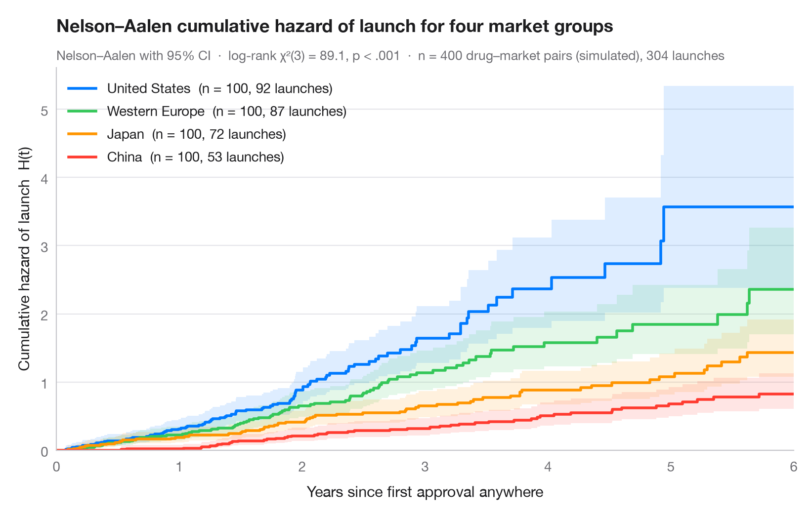

Cumulative hazard
Nelson–Aalen cumulative hazard of leaving office, with 95% bands, for four political regimes.

The cumulative hazard H(t) adds up the instantaneous risk of the event over time; it is the "risk accumulated so far" and relates to survival through S(t) = exp(−H(t)). Unlike a survival curve it is not bounded by 1, and its slope is the hazard itself — a straight line means a constant risk, a curve that bends upward means risk that grows with time.
Data are the Democracy and Dictatorship dataset of Cheibub, Gandhi & Vreeland
bundled with lifelines (lifelines.datasets.load_dd): years in office of
heads of government, 1946–2008, for the four largest regime types (1,478 of
1,808 spells; mixed democracies and monarchies are left out). Curves come from
lifelines.NelsonAalenFitter, and the subtitle reports a log-rank test across
the four regimes (multivariate_logrank_test). The democratic curves climb
steeply, and the presidential one in large steps — the footprint of fixed
terms and term limits — while the dictatorship curves stay low and nearly
straight, a lower and roughly constant risk. The x-axis stops at ten years,
after which only a handful of presidents remain at risk.
import matplotlib.pyplot as plt
from lifelines import NelsonAalenFitter
from lifelines.datasets import load_dd
from lifelines.statistics import multivariate_logrank_test
# Data: years in office of political leaders, four regime types
regimes = {"Presidential Dem": "Presidential democracy", "Parliamentary Dem": "Parliamentary democracy",
"Civilian Dict": "Civilian dictatorship", "Military Dict": "Military dictatorship"}
df = load_dd()
df = df[df.regime.isin(regimes)]
colors = ["#007AFF", "#34C759", "#FF9500", "#FF3B30"]
fig, ax = plt.subplots(figsize=(8, 5))
# Nelson–Aalen estimate with 95% CI, one curve per regime
for g, c in zip(regimes, colors):
d = df[df.regime == g]
naf = NelsonAalenFitter().fit(d.duration, d.observed, label=g)
# Show the first 10 years only: beyond that only a handful of presidents remain at risk
H, ci = naf.cumulative_hazard_[g].loc[:10], naf.confidence_interval_.loc[:10]
H.loc[10], ci.loc[10] = H.iloc[-1], ci.iloc[-1]
ax.step(H.index, H, where="post", color=c, lw=2,
label=f"{regimes[g]} (n = {len(d)}, {d.observed.sum()} exits)")
ax.fill_between(ci.index, ci.iloc[:, 0], ci.iloc[:, 1], step="post", color=c, alpha=0.13, lw=0)
# Log-rank test across grades
lr = multivariate_logrank_test(df.duration, df.regime, df.observed)
p_txt = "p < .001" if lr.p_value < 0.001 else f"p = {lr.p_value:.3f}"
ax.legend(loc="upper left")
ax.set(xlabel="Years in office", ylabel="Cumulative hazard of leaving office H(t)", xlim=(0, 10),
xticks=range(11), ylim=(0, None))
ax.set_title("Democratic leaders accumulate the risk of losing office fastest", pad=26)
ax.text(0, 1.02, f"Nelson–Aalen with 95% CI · log-rank χ²({lr.degrees_of_freedom}) = "
f"{lr.test_statistic:.1f}, {p_txt} · n = {len(df):,} leaders, {df.observed.sum():,} exits",
transform=ax.transAxes, fontsize=9.5, color="#6E6E73")
plt.show()
Figures use the optional PyStatlas style: add plt.style.use("pystatlas.mplstyle") to match the look exactly.
Data source
- Democracy and Dictatorship: leader spells, 1946–2008. Cheibub, J. A., Gandhi, J., & Vreeland, J. R. (2010). Democracy and dictatorship revisited. Public Choice, 143(1–2), 67–101. https://doi.org/10.1007/s11127-009-9491-2
202 countries; distributed with lifelines (lifelines.datasets.load_dd).
The examples illustrate statistical methods. Their titles describe what each figure shows in these particular data — often a small, dated or partial sample — not the author's position on the substantive question. For interpretation, context and data quality, rely on the original sources cited here.
How to cite
PyStatlas is created and maintained by Thierry Warin. If it helped your work, please cite it.
Warin, T. (2026). Cumulative hazard. In PyStatlas: The Python Gallery of Statistical Graphics for the Social Sciences. https://warint.github.io/pystatlas/survival/cumulative-hazard/
@misc{warin2026statlas,
author = {Warin, Thierry},
title = {PyStatlas: The Python Gallery of Statistical Graphics for the Social Sciences},
year = {2026},
howpublished = {\url{https://warint.github.io/pystatlas/}},
note = {Source code: https://github.com/warint/pystatlas}
}More in Survival analysis

Kaplan–Meier curves
How long political leaders stay in office, democracies vs non-democracies — survival curves with confidence bands, censoring marks, log-rank test and risk table.
survminer::ggsurvplot(risk.table = TRUE)
Cox hazard ratios
Forest plot of a Cox proportional hazards model with HR, 95% CI and p-values.
survminer::ggforest()
Adjusted survival curves
Cox model–predicted survival for several ages, other covariates held at their mean.
survminer::ggadjustedcurves()